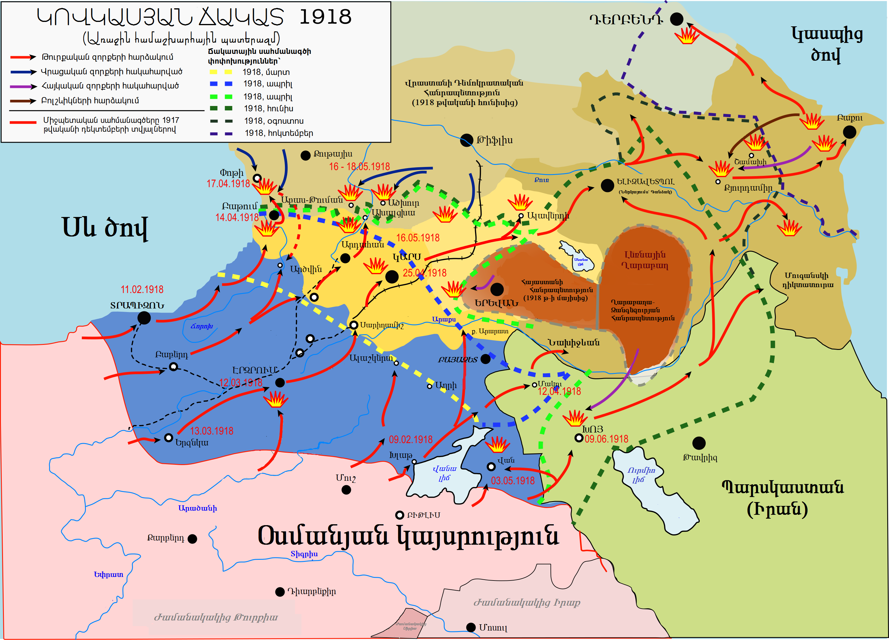

Ընդհանուր
Ղարաքիլիսայի հերոսամարտը տեղի է ունեցել 1918 թվականի մայիսի 25-28-ին հայկական և թուրքական զորքերի միջև, Ղարաքիլիսայի մոտ։ Այս ճակատամարտը շատ մեծ նշանակություն ուներ Հայ ազգի համար։
- Սկիզբ: Մայիս 25 1918
- Ավարտ: Մայիս 28 1918
- Վայր: Ղարաքիլիսա(ներկայիս Վանաձոր)
- Արդյունք: Հայկական կողմի մեծ հաղթանակ
- Հայաստանի ուժեր: 6000 կռվող
- Թուրքիայի ուժեր: 10000 զինվոր
- Հայաստանի կորուստներ: Համեմատաբար թեթև
- Թուրքիայի կորուստներ: 5000+ զոհ
Ղարաքիլիսայի ճակատամարտը վերջինն էր Մայիսյան հերոսամարտերի շարքում, որով և վերջակետ դրվեց թուրք-հայկական պատերազմին: Եթե Սարդարապատի և Բաշ-Ապարանի ճակատամարտերով Արարատյան դաշտավայրում հայությունը փրկվեց անխուսափելի ոչնչացումից, և նպաստավոր պայմաններ ստեղծվեցին հայոց պետականության վերականգնման համար, ապա Ղարաքիլիսայի ճակատամարտը, նշվածից բացի, ուներ նաև աշխարհաքաղաքական նշանակություն, քանզի դրա շնորհիվ որոշ ժամանակով կասեցվեց թուրքական զորքերի հետագա առաջխաղացումը դեպի Թիֆլիս ու Արևելյան Այսրկովկաս՝ խաթարելով համաթուրանական ծրագրերի շուտափույթ իրականացումը:
Հետաքրքիր փատեր
1.Տեղանքի անհարմարություններ․ Ղարաքիլիսայի շրջակայքի տեղանքը խորդուբորդ էր և լեռնային, ինչը անհարմարություն էր ինչպես հարձակողական, այնպես պաշտպանողական գործողությունների համար։ Հայկական ուժերն իրենց գիտելիքները՝ օգտագործելով բնական առանձնահատկությունները, ինչպիսիք են բլուրներն ու հովիտները՝ պաշտպանական դիրքեր և դարանակալներ ստեղծելու համար։
2.Հայ կամավորների դերը․ Ղարաքիլիսայի ճակատամարտում մասնակցում էին հայ կամավորներ տարբեր շրջաններից, այդ թվում՝ Հայոց ցեղասպանությունը վերապրածների, ովքեր փախել էին Կովկաս: Այս կամավորները վճռորոշ դեր խաղացին հայկական պաշտպանության ամրապնդման և Թուրքիայի ճնշումներին դիմակայելու հայ ժողովրդի վճռականության դրսևորման գործում:
3.Միջազգային ուշադրություն. Ղարաքիլիսայում հայկական հաղթանակը գրավեց միջազգային ուշադրությունն ու համակրանքը հայկական հարցի նկատմամբ: Այդ մասին զեկուցվել է թերթերում և դիվանագիտական հեռագրերում՝ բարձրացնելով իրազեկվածությունը հայ ժողովրդի ծանր վիճակի և նրա անկախության համար պայքարի մասին Առաջին համաշխարհային պատերազմի քաոսի պայմաններում:
4. Հայկական դիմադրության խորհրդանիշ. Ղարաքիլիսայի ճակատամարտը դարձավ հայկական դիմադրության խորհրդանիշ օտար ագրեսիայի և ճնշումների դեմ: Այն ոգեշնչեց հայերի հետագա սերունդներին դիմանալ դժբախտություններին դիմակայելուն և ծառայեց որպես համախմբման աղաղակ հայկական սփյուռքի համար՝ ապահովելու Հայոց ցեղասպանության ճանաչումը և նրա զոհերի արդարությունը:
5. Հուշարձաններ և հուշահամալիրներ. Այսօր Ղարաքիլիսայում կան տարբեր հուշարձաններ և հուշահամալիրներ, որոնք ոգեկոչում են Ղարաքիլիսայի ճակատամարտը և հարգում հայ զինվորներին, ովքեր կռվել և իրենց կյանքը զոհաբերել են հայրենիքի համար: Այս հուշահամալիրները հիշեցնում են մարտի ընթացքում հայ պաշտպանների ցուցաբերած խիզախության և տոկունության մասին:
6. Հայ մարտիկների քաջությունը. Ղարաքիլիսայում հայ մարտիկների քաջությունն ու տոկունությունը ճանաչվել են ոչ միայն իրենց հրամանատարների, այլև հակառակորդների կողմից: Օսմանյան սպաները բարձր են գնահատել հայ զինվորների քաջությունն ու համառությունը՝ ընդունելով մարտադաշտում նրանց առաջադրած ահռելի մարտահրավերը:
7. Նահանջներ. Գեներալ Նազարբեկյանի մարտավարական փայլը տարածվեց ռազմավարական նահանջների վրա, որտեղ ռազմավարական հայկական ուժերը կձևացնեին թուլություն և հետ քաշվեին` հրապուրելով օսմանյան զորքերին առաջ շարժվել դեպի նախապես ծրագրված սպանության գոտիներ: Այս մարտավարությունը, զուգորդված դժվարին տեղանքով, մեծ կորուստներ ունեցավ թուրքական ուժերի վրա:
8. Ստրատեգիական կետը. Ղարաքիլիսան, որը գտնվում է Հայկական լեռնաշխարհում, ռազմավարական դիրքում էր գտնվում Հայաստանի մայրաքաղաք Երևանի և Թիֆլիսի (այժմ՝ Վրաստանի մայրաքաղաք Թբիլիսիի) միջև կարևոր տրանսպորտային և ռազմավարական հաղորդակցության ուղիների երկայնքով: Ղարաքիլիսան վերահսկելը նշանակում էր վերահսկել մուտքը դեպի այս կարևոր քաղաքներ և այնտեղից դուրս՝ այն դարձնելով ռազմական գործողությունների առանցքային կետ:
Նախապատմություն
Ռուսաստանում 1917 թվականի Հոկտեմբերյան հեղափոխությունից հետո ռուսական զորքերը հեռացել էին Արևմտյան Հայաստանի տարածքից և գեներալ Թովմաս Նազարբեկյանի գլխավորած հայկական կորպուսը մնացել էր թուրքական զորեղ և գերազանց ուժերի դեմ։ Թուրքերը, խախտելով Անդրկովկասյան կոմիսարիատի հետ Երզնկայում 1917 թվականի դեկտեմբերի 5-ին կնքած զինադադարը, 1918 թվականի սկզբին ներխուժեցին Արևմտյան Հայաստան և վերանվաճեցին Երզնկան, Կարինը, Սարիղամիշը, Կարսը, նաև մայիսի 15-ին գրավեցին Ալեքսանդրապոլը։ Թուրքական գերակշիռ ուժերի ճնշման տակ անկազմակերպ հայկական կորպուսը նահանջեց, նրա հետ արտագաղթեցին նաև տասնյակ հազարաով արևմտահայեր, որոնց անվտանգությունն ապահովում էր Անդրանիկի ջոկատը։ Ալեքսանդրապոլից մի մասը շարժվեց Երևանի մյուս մասը՝ Ղարաքիլիսայի ուղղությամբ, որը այժմ Վանաձորն է։ Մայիսի 20-ին թուրքերը զավթեցին Ջաջուռը, Աղբուլաղը, Ղալթախչին, մայիսի 21-ի՝ Վորոնցովկան, որը այս պահին կոչվում է Տաշիր։ Ջալալօղլիի մոտ,երկօրյա մարտերից հետո(մայիսի 21-22-ին), Անդրանիկի ջոկատը կենտրոնացավ Դսեղ գյուղում, ապա շարժվեց դեպի Դիլիջան։ Գեներալ Նազարբեկյանի հրամանով 1-ին դիվիզիան և երկու լեռնային մարկոցներ քաշվեցին դեպի Շահալի, մնացածները կենտրոնացան Դիլիջանի մոտ։ Մայիսի 24-ին գրավեցին Համամլուն և հաջորդ օրվանից սկսվեց Ղարաքիլիսայի ճակատամարտը

Ընթացք
Ղարաքիլիսայի մոտ կենտրոնացած հայկական զորքը, որի հրամանատարն էր՝ Թովմաս Նազարբեկյանը, ուներ 6 հազար զինվոր, հրանոթ և մոտ 20 գնդացիր։ Թուրքական զորքը, որի հրամանատարն էր՝ Ջավադ բեյը ուներ 10 հազար ասկյար, 70 հրանոթ և 40 գնդացիր։ Մարտերին մասնակցել են նաև Ղարաքիլիսայի շրջակա գյուղերի բնակիչները։ Հայկական ուժերը թուրքերին հիմնական հարվածներ հասցրին Ղշլաղ գյուղի (այժմ՝ Վանաձորի Տարոն թաղամաս) մոտ, Բզովդալի մատույցներում և Մայմեխ լեռան լանջերին ու թուրքական գերակշիռ ուժերին հարկաղրեցին նահանջել դեպի Համամլու։ Մարտերի ընթացքում հայերը տվեցին մեծ կորուստներ (շուրջ 2500 մարդ սպանված, վիրավոր և գերի)։ Մեծ կորուստներ տվեցին նաև թուրքերը, սակայն, համալրում ստանալով, նրանք անցան հակահարձակման, և հայկական ուժերը հարկադրված նահանջեցին Դիլիջան։ Ղարաքիլիսայում և շրջակա գյուղերում թուրք ջարդարարները կոտորեցին հայ բնակչությանը, ավերեցին գյուղերը։ Ղարաքիլիսայի ճակատամարտը ծավալվեց մի քանի օրվա ընթացքում, երբ հայ պաշտպանները կռվեցին օսմանյան ուժերի դեմ: Ճակատամարտի սկզբում գրոհայինները համակարգված գրոհ են ձեռնարկել Ղարաքիլիս քաղաքի տարածքում գտնվող հայկական դիրքերի վրա։ Չնայած թվաքանակով գերազանցելուն և բարձր կրակային հզորությանը, հայ պաշտպանները գեներալ Թովմաս Նազարբեկյանի հրամանատարությամբ պատրաստվեցին հետ մղել առաջացող թշնամուն։ Ճակատամարտի ընթացքում երկու կողմերն էլ կատաղի կռվեցին, կատաղի մարտեր սկսվեցին Ղարաքիլիսայի շուրջը։ Հայ պաշտպանները, իրենց դիրքերը պահելու վճռականությամբ, օգտագործեցին տեղանքի մասին իրենց գիտելիքները և պարտիզանական մարտավարություն կիրառեցին՝ խափանելու թշնամու առաջխաղացումը: Չնայած կորուստներին և զինամթերքի ու պաշարների պակասին՝ հայերը ցուցաբերեցին ուշագրավ քաջություն և տոկունություն։ Ճակատամարտը հասավ իր գագաթնակետին, երբ օսմանյան ուժերը վճռական հարձակումներ կատարեցին հայկական դիրքերի վրա։ Սակայն հայ պաշտպանները, զորացած լինելով համալրմամբ և անսասան վճռականությամբ, հաջողությամբ հետ մղեցին թշնամու հաԿռվի ավարտին հայերը հաղթական դուրս եկան՝ հաջողությամբ պաշտպանելով Ղարաքիլիսան թշնամու հարձակումից։ Ղարաքիլիսում տարած հաղթանակը կարևոր պահ էր Հայաստանի անկախության համար պայքարում, որն օգնեց պաշտպանել Հայաստանի ինքնիշխանությունը ճանապարհ հարթեց Հայաստանի Հանրապետության ստեղծման համար: Չկարողանալով ճեղքել հայկական պաշտպանությունը և կրելով աճող կորուստներ՝ թուրքերը սկսեցին նահանջել։
Ավարտ
Ղարաքիլիսայի ճակատամարտը՝ առանցքային հակամարտությունը 1918-ի հայ-օսմանյան պատերազմում, ավարտվեց հայկական ուժերի հետ, զորավար Թովմաս Նազարբեկյանի հրամանատարությամբ՝ հաջողությամբ ետ մղելով օսմանյան զորքերը։ Չնայած ճնշող դժվարություններին, հայերը ցույց տվեցին ուշագրավ տոկունություն, ռազմավարական խորաթափանցություն և վճռականություն մարտի ողջ ընթացքում: 1918 թվականի մայիսի 24-ից մինչև մայիսի 28-ը տևողությամբ բախումը բնութագրվում էր ինտենսիվ և կատաղի մարտերով, երկու կողմերն էլ կատաղի պայքարում էին ռազմավարական Ղարաքիլիսա քաղաքի վերահսկողության համար: Օգտվելով խորդուբորդ տեղանքին իրենց խորը ծանոթությունից՝ հայ պաշտպանները հնարամիտ պաշտպանական զորավարժություններ կատարեցին՝ արդյունավետորեն խափանելով օսմանյան ուժերի կողմից ձեռնարկվող յուրաքանչյուր հարձակում: Երբ օսմանյան հարձակումը տապալվեց հայկական համառ դիմադրության դեմ, պաշտպանները գրավեցին նախաձեռնությունը՝ մեծ կորուստներ պատճառելով թշնամու շարքերին: Ի վերջո, հայերը հաղթական դուրս եկան՝ ապահովելով Ղարաքիլիսան և հաստատակամորեն պաշտպանելով Հայաստանի տարածքային ամբողջականությունը։ Ղարաքիլիսայի հնչեղ հաղթանակը որոշիչ պահ ծառայեց անկախության համար հայկական պայքարում՝ հույս և ամրություն ներշնչելով հայ ժողովրդին ինքնիշխանության և ինքնորոշման ձգտումներում: Կովկասում թուրքական զորքերի հրամանատար Վեհիբ փաշան հետագայում, Բաթումի բանակցությունների ժամանակ, խոստովանեց, որ Ղարաքիլիսայի ճակատամարտը «...բացառիկ ճակատամարտ էր այս պատերազմի պատմության մեջ։ Ղարաքիլիսայի մոտ հայերը ցույց տվեցին, որ նրանք կարող են աշխարհի լավագույն զինվորները լինել»։ Ղարաքիլիսայի ճակատամարտի, Սարդարապատի և Բաշ Ապարանի ճակատամարտերի (1918) շնորհիվ թուրքերը չկարողացան մտնել Երևան, Արարատյան դաշտ և Սևանի ավազան։


{kind=link}
{kind=link}
{kind=link}
{kind=link}
{kind=link}
{kind=link}
{kind=link}
{kind=link}
{kind=link}